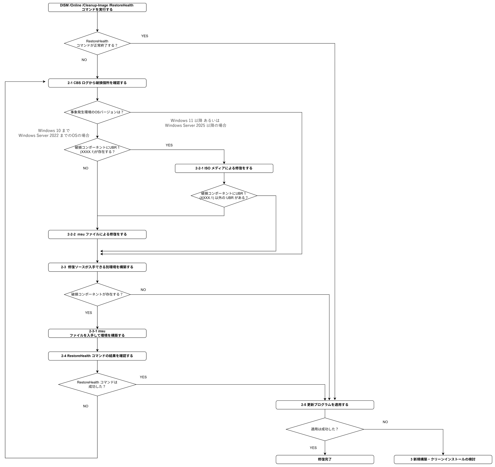

※ 本記事はマイクロソフト社員によって公開されております。
本章は以下の自動修復編の修復を実行しても、更新プログラムの適用が成功しない場合に、手動による修復を試みる章です。
まだご覧になっていない場合は、OS の種類に応じて確認ください。
更新プログラム適用に伴う破損修復 (クライアント編)
更新プログラム適用に伴う破損修復 (サーバー編)
なお、各手順をご実施前に、念のため各種データのバックアップをご実施いただくことをお勧めいたします。
目次
0. 全体の流れ
1 DISM /Online /Cleanup-Image /RestoreHealth コマンドを実行する
2 修復ソースの入手および修復手順
2-1 CBS ログから破損個所を確認する
2-2 修復ソースを特定する
2-2-1 ISO メディアによる修復をする
2-2-2 修復用の msu ファイルを入手する
2-3 修復ソースが入手できる別環境を構築する
2-3-1 msu ファイルを別環境に当てて、修復用ファイルを抽出する
2-4 RestoreHealth コマンドの結果を確認する
2-5 更新プログラムを適用する
3. 新規構築および クリーンインストールを検討する
0. 全体の流れ

1 DISM /Online /Cleanup-Image /RestoreHealth コマンドを実行する
クライアント 編、サーバー 編でRestoreHealth コマンドが正常終了しない場合、修復に必要なデータ (修復ソース) が取得できないものの、RestoreHealth コマンドで検出できる軽微な破損が残存している可能性があります。
その場合、修復ソースを個別に用意のうえ修復することで、更新プログラムの適用に成功する可能性がありますので、2.修復ソースの入手および修復手順へお進みください。
一方で、RestoreHealth コマンドが正常終了した後も更新プログラムの適用に失敗する場合、軽微な破損ではなく、レジストリの一部に不整合が起きているなど、
潜在的な破損が生じている可能性がありますので、3. 新規構築および クリーンインストールを検討するへお進みください。
2 修復ソースの入手および修復手順
2-1 CBS ログから破損個所を確認する
以下手順を実施し、破損個所を特定します。
RestoreHealth コマンド実行後に、事象が発生している端末にて %WinDir%\Logs\CBS\CBS.log あるいは CbsPersist_XXXX.logを確認します。
“Checking System Update Readiness”で CBS ログ内を検索します。
“Checking System Update Readiness”の直下にコンポーネント名が列挙されている場合、破損しているコンポーネントの具体的な情報をご確認いただけます。
Checking System Update Readiness.
(p) CSI Payload Corrupt (n) amd64_microsoft-windows-a..modernappmanagement_31bf3856ad364e35_10.0.19045.3636_none_23b3b3ece690d77b\EnterpriseModernAppMgmtCSP.dll
(p) CBS MUM Missing (n) Microsoft-Windows-Client-Features-Package~31bf3856ad364e35~amd64~~10.0.19045.4291
(p) CSI Manifest Corrupt (n) wow64_microsoft-windows-audio-mmecore-acm_31bf3856ad364e35_10.0.19045.1_none_a12b40f4b4c7b751
(p) CSI Manifest Corrupt (n) wow64_microsoft-windows-audio-volumecontrol_31bf3856ad364e35_10.0.19045.3636_none_4514b27cf12f35d5
Summary:
Operation: Detect and Repair
Operation result: 0x800f081f
Last Successful Step: Remove staged packages completes.
Total Detected Corruption: 4
CBS Manifest Corruption: 4
CBS Metadata Corruption: 0
CSI Manifest Corruption: 0
CSI Metadata Corruption: 0
CSI Payload Corruption: 0
Total Repaired Corruption: 0
CBS Manifest Repaired: 0
CSI Manifest Repaired: 0
CSI Payload Repaired: 0
CSI Store Metadata refreshed: False
Staged Packages:
CBS Staged packages: 0
CBS Staged packages removed: 0
- 破損しているコンポーネントの Update Build Revision (UBR) 番号を確認します。
前述の表示例の場合、”19045.3636” と”19045.1” と “19045.4291” が破損個所のUpdate Build Revision (UBR) 番号です。
修復ソースは OS バージョンによって収集方法が異なりますので、事前にOS バージョンを確認ください。
前提として弊社からのファイル提供はライセンス観点から実施できず、お客様にてご用意いただく必要があります。
OS バージョン( Windows 10 まで / Windows Server 2022 まで)の場合 ：2-2 へ
OS バージョン( Windows 11 以降 / Windows Server 2025 以降)の場合 ：2-3 へ
[補足情報]
Update Build Revision (UBR) に関する情報は以下を参考にしてください。
Windows 11 - release information | Microsoft Learn
Windows 10 リリース情報 | Microsoft Learn
Windows Server のリリース情報 | Microsoft Learn
2-2 修復ソースを特定する
破損コンポーネントにUBR 1 (XXXX.1)が存在するか確認します。
破損コンポーネントにUBR 1 (XXXX.1)がある場合：2-2-1 へ
破損コンポーネントにUBR 1 (XXXX.1)がない場合：2-2-2 へ
2-2-1 ISO メディアによる修復をする
事前準備
UBR 1 (XXXX.1) が含まれる場合は、ISO メディアから修復ソースを入手する必要がありますので、UBR に対応する OS バージョンの ISO メディアをご用意ください。
もしお手元にない場合は、更新プログラム適用に伴う破損修復 (サーバー編) ISO メディアの入手方法 をご確認ください。
事前準備いただいた ISO メディアをマウントします。
管理者権限で起動したコマンドプロンプトより以下のコマンドを実行し、ISO メディアに含まれるエディションを確認のうえ、修復対象の OS エディションに対応するインデックス番号をメモします。
1 | DISM /Get-WimInfo /WimFile:"<Install.wim のパス>" |
- ISO ファイルに含まれる install.wim を使用し、修復を行います。
1 | DISM /Online /Cleanup-Image /RestoreHealth /source:WIM:<ドライブ名>:\Sources\Install.wim:<Index番号> /LimitAccess |
以上で手順は完了です。
破損コンポーネントにUBR 1 (XXXX.1) 以外の UBR があるか確認します。
破損コンポーネントにUBR 1 (XXXX.1) 以外の UBR がある場合：2-2-2 へ
破損コンポーネントにUBR 1 (XXXX.1) 以外の UBR がない場合：2-3 へ
2-2-2 修復用の msu ファイルを入手する
Update Build Revision (UBR)に紐づく更新プログラム(KB 番号)を特定します。
例の場合、UBR 3636 は KB5031445に対応し、UBR 4291 は KB5036892に対応している場合があります。
※もし厳密に一致してる KB 番号が存在しない場合は、破損コンポーネントの UBR より大きくもっとも近い KB 番号を参照ください。2023 年 10 月 26 日 ? KB5031445 (OS ビルド 19045.3636) プレビュー
2024 年 4 月 9 日 ? KB5036892 (OS ビルド 19044.4291 および 19045.4291)
弊社カタログサイトから、特定した KB 番号を検索してスタンドアロンパッケージ(.msu)をダウンロードします。
タイトル: Microsoft Update カタログ
URL:https://www.catalog.update.microsoft.com/Home.aspx入手した更新プログラムのスタンドアロンパッケージ(.msu)を以下の公開情報の手順で展開します。
タイトル: システム ファイル チェッカー ツールを使用して不足または破損しているシステム ファイルを修復する
URL:https://learn.microsoft.com/ja-jp/troubleshoot/windows-server/support-tools/scripts-extract-msu-cab-files管理者権限のコマンドプロンプトにて Dism コマンドで修復ソースを指定して修復します。
1 | 構文) |
以上で手順は完了です。2-3 へ進んでください。
2-3 修復ソースが入手できる別環境を構築する
事象が発生している端末にて %WinDir%\Logs\CBS\CBS.log あるいは CbsPersist_XXXX.logを確認し、
最も新しいタイムスタンプの “Checking System Update Readiness”の直下に具体的なコンポーネントが列挙されているか確認します。
破損コンポーネントが存在する場合：2-3-1 へ
破損コンポーネントが存在しない場合：2-5 へ
2-3-1 msu ファイルを別環境に当てて、修復用ファイルを抽出する
Update Build Revision (UBR)に紐づく更新プログラム(KB 番号)を特定します。
例の場合、UBR 3636 は KB5031445に対応し、UBR 4291 は KB5036892に対応している場合があります。
※もし厳密に一致してる KB 番号が存在しない場合は、破損コンポーネントの UBR より大きくもっとも近い KB 番号を参照ください。2023 年 10 月 26 日 ? KB5031445 (OS ビルド 19045.3636) プレビュー
2024 年 4 月 9 日 ? KB5036892 (OS ビルド 19044.4291 および 19045.4291)弊社カタログサイトから、特定した KB 番号を検索してmsu ファイルをダウンロードします。
タイトル: Microsoft Update カタログ
URL:https://www.catalog.update.microsoft.com/Home.aspx入手した更新プログラムの msu ファイルを適用した別環境を構築します。
※UBR が複数ある場合は、UBRが小さい更新プログラムから順に適用して後述の修復ソースを入手します。破損したパッケージの種類によって、修復ソースを入手します。
Checking System Update Readiness の一覧のパッケージ左記が種類になります。// 表示例
Checking System Update Readiness. (p) CSI Payload Corrupt (n) amd64_microsoft-windows-a..modernappmanagement_31bf3856ad364e35_10.0.19045.3636_none_23b3b3ece690d77b\EnterpriseModernAppMgmtCSP.dll (p) CBS MUM Missing (n) Microsoft-Windows-Client-Features-Package~31bf3856ad364e35~amd64~~10.0.19045.4291 (p) CSI Manifest Corrupt (n) wow64_microsoft-windows-audio-volumecontrol_31bf3856ad364e35_10.0.19045.3636_none_4514b27cf12f35d5
種類と修復ソースの場所と用意の仕方に応じて、入手したパッケージを任意のフォルダに全て格納します。
例) C:\FixSources
| 表示 | 修復ソースの場所 | 用意の仕方 |
|---|---|---|
| CSI Manifest Corrupt | C:\Windows\WinSxS\Manifests*.manifest | *.manifest のファイルをコピーしてください |
| CSI Payload Corrupt | C:\Windows\WinSxS\ <ファイル名>*.(dll/sys/exe) | C:\Windows\WinSxS\ <ファイル名>フォルダごとコピーしてください |
| CBS MUM Missing | C:\Windows\Servicing\Packages*.mum / *.cat | *.mum / *.cat をセットでコピーしてください |
- 管理者権限のコマンドプロンプトにて Dism コマンドで修復ソースを指定して修復します。
1 | 構文) |
以上で手順は完了です。2-4 へ進んでください。
Kv
2-4 RestoreHealth コマンドの結果を確認する
RestoreHealth コマンドの結果を確認します。
注意！
破損の修復は一度に全ての破損個所が特定されず、修復が完了したとしても、処理が進むことで潜在化していた破損が顕在化することで、
新たな破損を検出することがありますので、弊社過去事例におきましては、修復修復を繰り返さなければならない事例が多数あります。
そのため、もしお急ぎの場合は、更新プログラム適用に伴う破損修復 (クライアント編) や 更新プログラム適用に伴う破損修復 (サーバー編)で紹介いたしました通り、インプレース アップグレードの実施を検討ください。
2-5 更新プログラムを適用する
更新プログラムを適用します。
成功した場合：作業完了
失敗した場合：3 へ
3. 新規構築および クリーンインストールを検討する
今までご案内した手順においても修復が完了しない場合、OS 標準の機能より検出や修復が出来ないレジストリの不整合などが発生していることが予測されます。
OS 標準の機能より検出や修復が出来ない破損につきましては、原則新規構築や、クリーン インストールでの対応が必要となります。
[特記事項]
本情報の内容（添付文書、リンク先などを含む）は、作成日時点でのものであり、予告なく変更される場合があります。